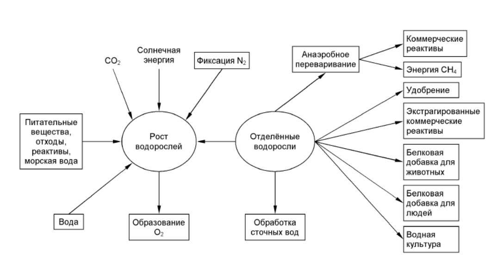

Роль регуляции и иммунной системы в поддержании постоянства внутренней среды
Гомеостаз, нервная и гуморальная регуляция, иммунная защита организма - как тело сохраняет стабильность при постоянных изменениях.
Введение
Гомеостаз - способность организма поддерживать постоянство внутренней среды: температуру тела, состав крови, уровень pH, артериальное давление, концентрацию глюкозы и других показателей. Это возможно благодаря согласованной работе нервной, эндокринной и иммунной систем.
Любое отклонение от нормы запускает механизмы саморегуляции, которые возвращают показатели к оптимальным значениям. Так организм адаптируется к изменениям внешней среды и сохраняет здоровье.

Виды регуляции функций организма
Нервная регуляция
Осуществляется через нервные импульсы по рефлекторным дугам. Обеспечивает мгновенную реакцию на раздражители, точное управление мышцами и органами.
Гуморальная регуляция
Осуществляется через кровь, лимфу, тканевую жидкость. Медленнее нервной, но действует длительно и на все органы сразу.
Эндокринная система
Железы внутренней секреции выделяют гормоны, которые регулируют обмен веществ, рост, развитие и размножение.
Иммунная система
Распознаёт и уничтожает чужеродные агенты - бактерии, вирусы, токсины, а также собственные изменённые клетки.
Нейрогуморальная регуляция
🧠 Нервная регуляция
- Скорость: мгновенная (доли секунды).
- Точность: действует на конкретный орган.
- Длительность: кратковременная.
- Пример: отдёргивание руки от горячего, сужение зрачка на свету.
💧 Гуморальная регуляция
- Скорость: медленная (секунды–минуты).
- Точность: действует на многие органы сразу.
- Длительность: продолжительная.
- Пример: адреналин учащает пульс, инсулин снижает сахар в крови.
Оба вида регуляции работают совместно - их объединяют в нейрогуморальную регуляцию. Нервная система запускает быстрые реакции, а эндокринная обеспечивает длительные перестройки организма.
Иммунитет и его виды
🟢 Врождённый иммунитет
Передаётся по наследству, действует у всех представителей вида одинаково.
- Барьеры: кожа, слизистые оболочки.
- Физические: реснички, слизь, кашель, чихание.
- Химические: соляная кислота в желудке, ферменты слюны и слёз.
- Клеточные: фагоцитоз (пожирание микробов лейкоцитами).
🟠 Приобретённый иммунитет
Формируется в течение жизни после встречи с возбудителем или вакцинации.
- Активный: после болезни или прививки.
- Пассивный: через грудное молоко, сыворотку.
- Гуморальный: антитела в крови.
- Клеточный: лимфоциты уничтожают заражённые клетки.
Клетки иммунной системы
Фагоциты
Захватывают и переваривают чужеродные частицы и бактерии. Открыты И. И. Мечниковым.
B-лимфоциты
Синтезируют антитела - белки, которые связывают антигены и обезвреживают их.
T-лимфоциты
Одни помогают B-лимфоцитам (T-хелперы), другие уничтожают заражённые клетки (T-киллеры).
Клетки памяти
Хранят информацию о перенесённой инфекции и обеспечивают быстрый ответ при повторном заражении.
Механизмы поддержания гомеостаза
Терморегуляция
Потоотделение, расширение и сужение сосудов, дрожь. Норма - 36,6 °C.
Состав крови
Постоянство уровня глюкозы, pH, солей, клеток крови. Регулируется гормонами и почками.
Кровяное давление
Поддерживается работой сердца, тонусом сосудов и объёмом циркулирующей крови.
Водно-солевой баланс
Регулируется почками, гормонами (альдостерон, вазопрессин) и чувством жажды.
Сравнительная таблица видов регуляции
| Признак | Нервная регуляция | Гуморальная регуляция |
|---|---|---|
| Способ передачи сигнала | Нервные импульсы | Гормоны и биологически активные вещества |
| Путь передачи | По нервным волокнам | Через кровь, лимфу, тканевую жидкость |
| Скорость | Мгновенная | Медленная |
| Длительность | Кратковременная | Продолжительная |
| Точность действия | Точечная (на конкретный орган) | Общая (на весь организм) |
| Регулирующий центр | ЦНС (головной и спинной мозг) | Железы внутренней секреции |
Сравнение врождённого и приобретённого иммунитета
| Признак | Врождённый | Приобретённый |
|---|---|---|
| Когда формируется | До рождения, передаётся по наследству | В течение жизни |
| Специфичность | Общая защита от любых микробов | Точечная - против конкретного возбудителя |
| Примеры | Кожа, слизистые, фагоцитоз, кислота желудка | Антитела после болезни или прививки |
| Скорость реакции | Быстрая, но менее точная | Медленнее при первом контакте, но точная |
| Длительность | Постоянно активен | Хранится клетками памяти |
💡 Главное запомнить
- Гомеостаз - постоянство внутренней среды организма, основа здоровья.
- Нервная регуляция - быстрая и точная, гуморальная - медленная и длительная.
- Вместе они образуют нейрогуморальную регуляцию - единый механизм управления.
- Иммунитет бывает врождённый (общий) и приобретённый (специфический).
- Ключевые клетки иммунитета: фагоциты, B- и T-лимфоциты, клетки памяти.
- Нарушение регуляции ведёт к заболеваниям: диабет, гипертония, аутоиммунные реакции.